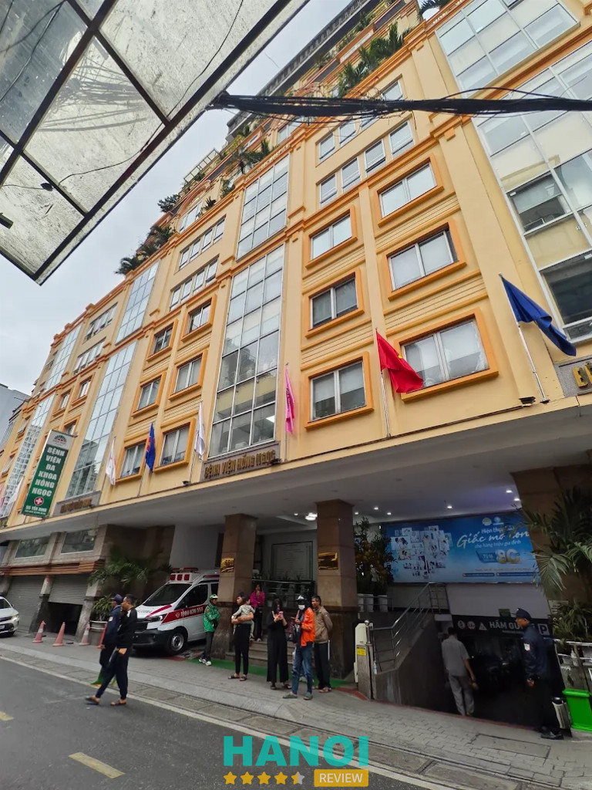
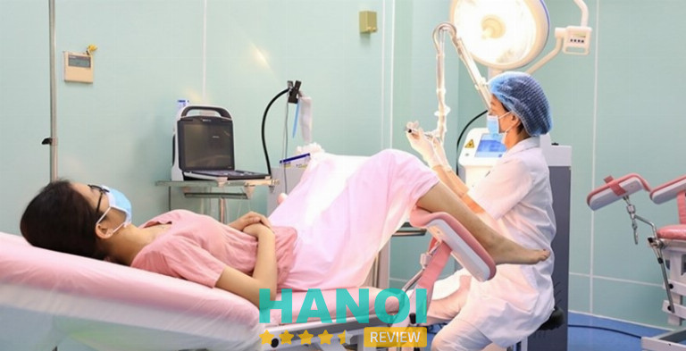
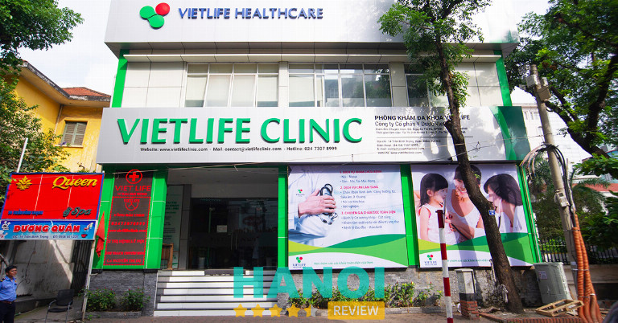

10 Phòng khám sản phụ khoa tại Hà Nội uy tín, có BS giỏi
Ngày nay, có rất nhiều phòng khám sản phụ khoa tại Hà Nội được mở ra, tuy nhiên, việc lựa chọn một địa chỉ đáng tin cậy và mang lại chất lượng tốt rất quan trọng. Nên lựa chọn những phòng khám có đội ngũ y bác sĩ giỏi, có chuyên môn cao cùng với trang thiết bị y tế tiên tiến để bảo vệ sức khỏe của bản thân.
Top 10 Phòng khám sản phụ khoa tại Hà Nội uy tín, chất lượng
Quá trình khám sản phụ khoa thường là một trải nghiệm nhạy cảm, đặc biệt là đối với những phụ nữ chưa có gia đình. Tâm lý chung của chị em thường là mong muốn tìm kiếm một phòng khám với các bác sĩ giàu kinh nghiệm và chuyên môn, đồng thời đảm bảo tính bảo mật cho thông tin cá nhân.
Trong bài viết này, HaNoiReview sẽ giới thiệu đến các bạn 10 Phòng khám sản phụ khoa tại Hà Nội uy tín, BS giỏi, nhiều năm kinh nghiệm. Bao gồm cả địa chỉ công và các phòng khám tư. Đây là những địa điểm mà bạn có thể hoàn toàn tin tưởng để khám chữa bệnh, bảo vệ sức khỏe một cách hiệu quả nhất.
Bệnh viện Phụ sản Trung ương
Bệnh viện Phụ sản Trung ương (thường được gọi là Viện C) là cơ sở y tế đầu ngành, tuyến cao nhất trong lĩnh vực sản phụ khoa, kế hoạch hóa gia đình và sơ sinh tại Việt Nam. Dưới đây là thông tin chi tiết giúp bạn hiểu rõ hơn về địa chỉ uy tín này:
Đội ngũ chuyên gia cao cấp
- Bệnh viện hội tụ những giáo sư, tiến sĩ và bác sĩ hàng đầu cả nước, không chỉ trực tiếp thăm khám mà còn thực hiện đào tạo, nghiên cứu khoa học:
- Lãnh đạo tiêu biểu: TTND.GS.TS.BS Nguyễn Duy Ánh – Giám đốc Bệnh viện, chuyên gia có hơn 35 năm kinh nghiệm trong ngành.
- Hệ thống nhân sự: Bệnh viện có hơn 1.500 cán bộ, trong đó có khoảng 205 bác sĩ trình độ cao (PGS, TS, ThS, BSCKII).
- Chuyên môn: Các bác sĩ tại đây nổi tiếng với việc xử lý thành công các ca bệnh khó, mang thai nguy cơ cao, dị tật bẩm sinh sơ sinh và hỗ trợ sinh sản.
Các dịch vụ và thế mạnh mũi nhọn
- Sản khoa: Khám thai định kỳ, chăm sóc thai kỳ nguy cơ cao, dịch vụ đẻ thường và đẻ mổ với kỹ thuật giảm đau tiên tiến.
- Phụ khoa: Điều trị nội khoa và phẫu thuật các bệnh lý như u xơ tử cung, u nang buồng trứng, ung thư phụ khoa.
- Hỗ trợ sinh sản: Trung tâm Hỗ trợ sinh sản Quốc gia tại đây là đơn vị đi đầu về kỹ thuật IVF (thụ tinh trong ống nghiệm) tại Việt Nam.
- Chẩn đoán trước sinh: Sàng lọc, chẩn đoán sớm các dị tật thai nhi bằng công nghệ hiện đại.
- Chăm sóc sơ sinh: Tiếp nhận và điều trị những trẻ sinh non cực non (có những trường hợp chỉ nặng khoảng 400-500g).
Giờ làm việc
- Thứ 2 – Thứ 6: 06h30 – 16h30.
- Thứ 7, Chủ Nhật: 07h30 – 16h30 (thường là khám dịch vụ/theo yêu cầu).
- Cấp cứu: Trực 24/7 (vào cổng số 1 Triệu Quốc Đạt).
Thông tin liên hệ:
- Địa chỉ:
- Cơ sở 1: Địa chỉ chính: Số 43 Tràng Thi, Phường Hàng Bông (hoặc Cửa Nam), Quận Hoàn Kiếm, Hà Nội.
- Cổng phụ: Số 1 Triệu Quốc Đạt (thường dành cho cấp cứu và làm thủ tục hành chính).
- Phòng khám theo yêu cầu: Số 56 Hai Bà Trưng, Hoàn Kiếm.
- Cơ sở 2: Xã Ngọc Mỹ, Huyện Quốc Oai, Hà Nội (mới khánh thành với quy mô hiện đại).
- Điện thoại: 1900 1029
- Website: benhvienphusantrunguong.org.vn
- Fanpage: FB.com/benhvienphusantrunguong.org.vn
Bệnh viện Phụ sản Hà Nội
Bệnh viện Phụ sản Hà Nội là bệnh viện chuyên khoa hạng I và là một trong những đơn vị tuyến cuối về chuyên môn kỹ thuật sản phụ khoa tại Việt Nam. Đây là địa chỉ tin cậy hàng đầu cho chị em phụ nữ trong việc quản lý thai nghén và điều trị các bệnh lý phụ khoa chuyên sâu.
Đội ngũ chuyên gia và thế mạnh chuyên môn
Bệnh viện quy tụ nhiều chuyên gia có trình độ cao, giàu kinh nghiệm trong chẩn đoán và điều trị thực tiễn:
- Lãnh đạo tiêu biểu: TS.BSCKII Mai Trọng Hưng – Giám đốc Bệnh viện.
- Chuyên khoa mũi nhọn: Bệnh viện tập trung phát triển 7 mũi nhọn chuyên sâu, bao gồm:
- Sản khoa & Quản lý thai nghén: Chăm sóc thai kỳ từ cơ bản đến phức tạp, đặc biệt mạnh về các ca đẻ khó và đẻ dịch vụ (D3, D4).
- Chẩn đoán trước sinh: Đi đầu trong sàng lọc và can thiệp bào thai.
- Hỗ trợ sinh sản: Thực hiện các kỹ thuật IVF tiên tiến với tỷ lệ thành công cao.
- Sơ sinh: Cấp cứu và điều trị hiệu quả cho trẻ sinh non, nhẹ cân.
- Phụ khoa: Phẫu thuật nội soi và điều trị các bệnh lý lây nhiễm phức tạp (Khoa C3).
Dịch vụ nổi bật
- Khu dịch vụ (D3, D4): Cung cấp trải nghiệm sinh con tiện nghi, phòng nghỉ sạch sẽ, riêng tư và đội ngũ điều dưỡng chăm sóc tận tình.
- Dịch vụ khám theo yêu cầu: Giúp giảm thời gian chờ đợi và được lựa chọn bác sĩ thăm khám trực tiếp.
Giờ làm việc
- Khám hành chính: Thứ 2 – Thứ 6 (07h00 – 16h30).
- Khám dịch vụ: Có làm việc cả Thứ 7 và Chủ Nhật (giờ giấc thay đổi tùy cơ sở).
- Cấp cứu: Trực 24/24 tại cơ sở La Thành.
Thông tin liên hệ:
- Địa chỉ:
- Cơ sở 1 (Trụ sở chính): Số 929 Đường La Thành, Ngọc Khánh, Ba Đình, Hà Nội.
- Cơ sở 2: Số 38 Cảm Hội, Hai Bà Trưng, Hà Nội.
- Cơ sở 3: Số 10 Quang Trung, Hà Đông, Hà Nội.
- Điện thoại: 1900 6922
- Website: benhvienphusanhanoi.vn.
- Fanpage: FB.com/profile.php?id=61582711611172
Khoa Phụ sản – Bệnh viện Bạch Mai
Khoa Phụ sản – Bệnh viện Bạch Mai là một trong những trung tâm sản phụ khoa lớn nhất tại Hà Nội. Khác với các bệnh viện chuyên khoa thuần túy, thế mạnh đặc biệt của Bạch Mai là nằm trong một bệnh viện đa khoa hoàn chỉnh, cực kỳ an toàn cho các ca sinh khó hoặc sản phụ có bệnh lý nền.
Đội ngũ chuyên gia và thế mạnh chuyên môn
- Bạch Mai nổi tiếng là nơi quy tụ những “bàn tay vàng” và các chuyên gia có khả năng xử lý các tình huống y khoa phức tạp nhất:
- Lãnh đạo tiêu biểu: TS.BS. Đỗ Tuấn Hiệp – Trưởng khoa Phụ sản, cùng đội ngũ PGS, Tiến sĩ có thâm niên công tác lâu năm.
Thế mạnh đặc biệt:
- Sản bệnh lý: Đây là “cứu cánh” cho các sản phụ mắc bệnh lý nội khoa nặng như tim mạch, suy thận, tiểu đường, tiền sản giật, lupus ban đỏ… nhờ sự phối hợp liên chuyên khoa giữa khoa Sản và các khoa đầu ngành khác ngay trong bệnh viện.
- Phẫu thuật phụ khoa: Thực hiện thành công các ca mổ khó như ung thư phụ khoa, u xơ tử cung kích thước lớn bằng phương pháp nội soi hiện đại.
- Kỹ thuật cao: Chẩn đoán trước sinh, sàng lọc dị tật thai nhi và hồi sức sơ sinh chuyên sâu.
Dịch vụ nổi bật
- Đẻ dịch vụ tại nhà Việt Nhật: Khu vực này được đầu tư theo tiêu chuẩn quốc tế, phòng ốc sạch sẽ, tiện nghi và quy trình chăm sóc hậu sản rất chu đáo.
- Khám theo yêu cầu: Bạn có thể đăng ký khám tại Khoa Khám bệnh theo yêu cầu để được các bác sĩ trưởng/phó khoa trực tiếp thăm khám, giảm thời gian chờ đợi.
Giờ làm việc
- Khám hành chính: Thứ 2 – Thứ 6 (06h30 – 16h30).
- Khám dịch vụ: Thứ 7 và Chủ nhật (07h30 – 16h30).
- Cấp cứu: Trực 24/24 (tiếp nhận mọi ca cấp cứu sản khoa từ tuyến dưới chuyển lên).
Lưu ý nhỏ: Do là bệnh viện tuyến cuối nên lượng bệnh nhân tại Bạch Mai rất đông. Bạn nên đến sớm hoặc đặt lịch trước để quá trình thăm khám diễn ra thuận lợi nhất.
Thông tin liên hệ:
- Địa chỉ: Số 78 Giải Phóng, Phương Mai, Đống Đa, Hà Nội.
- Điện thoại: 024 3868 6921
- Website: bachmai.gov.vn
- Fanpage: FB.com/benhvienbachmai1911
Lưu ý: Khoa sản phụ khoa nằm tại Tòa nhà Việt Nhật (Nhà P) – khu vực có cơ sở vật chất hiện đại nhất bệnh viện.
Bệnh viện Đa khoa Quốc tế Thu Cúc (Thu Cúc TCI)
Bệnh viện Đa khoa Quốc tế Thu Cúc (Thu Cúc TCI) là địa chỉ khám sản phụ khoa tư nhân nổi tiếng nhất tại Hà Nội về mô hình “Đi đẻ như đi nghỉ dưỡng”. Đây là lựa chọn hàng đầu cho các gia đình ưu tiên sự thoải mái, dịch vụ chăm sóc tận tâm và không gian hiện đại.
Đội ngũ bác sĩ và chuyên môn
- Đội ngũ bác sĩ: Thu Cúc quy tụ các bác sĩ giỏi từng giữ chức vụ quan trọng tại Phụ sản Trung ương và Phụ sản Hà Nội, cùng đội ngũ bác sĩ Quốc tế (như bác sĩ từ Cuba) giàu kinh nghiệm.
Thế mạnh:
- Sản khoa: Quản lý thai kỳ toàn diện, xử lý tốt các ca mổ đẻ chủ động, đẻ không đau.
- Công nghệ: Sử dụng máy siêu âm 5D hiện đại, hệ thống xét nghiệm tự động cho kết quả nhanh và chính xác.
Dịch vụ “Thai sản trọn gói” nổi bật
Đây là sản phẩm mũi nhọn của Thu Cúc với các ưu điểm:
- Chăm sóc từ A-Z: Gia đình không cần mang theo đồ dùng (bỉm, sữa, quần áo cho mẹ và bé đều được cung cấp sẵn).
- Quyền lợi cho mẹ: Miễn phí lớp học tiền sản, được chọn giờ sinh, áp dụng phương pháp “đẻ không đau”, chiếu plasma sau sinh giúp vết thương nhanh lành.
- Quyền lợi cho bé: Áp da bố và mẹ ngay sau sinh, tiêm vaccine vitamin K, viêm gan B, sàng lọc sơ sinh lấy máu gót chân.
- Hậu sản: Nghỉ dưỡng tại phòng riêng tiện nghi, thực đơn dinh dưỡng 3 bữa/ngày phục vụ tận giường.
Giờ làm việc
- Khám bệnh: Từ 07h00 – 17h00 (Tất cả các ngày trong tuần, kể cả lễ Tết).
- Trực cấp cứu & Đỡ đẻ: 24/24 tại cơ sở 286 Thụy Khuê.
Thông tin liên hệ:
- Địa chỉ: Số 286 Thụy Khuê, Tây Hồ, Hà Nội (Nơi trực tiếp thực hiện các ca sinh).
- Điện thoại: 1900 558 892
- Email: contact@thucuchospital.vn
- Website: benhvienthucuc.vn
- Fanpage: FB.com/bvtc.hn
Bệnh viện Đa khoa Quốc tế Hồng Ngọc
Bệnh viện Đa khoa Quốc tế Hồng Ngọc là một trong những hệ thống y tế tư nhân theo mô hình bệnh viện – khách sạn đầu tiên tại Hà Nội. Với thế mạnh về sự kết hợp giữa Sản khoa và Phụ khoa, đây là địa chỉ ưu tiên cho những phụ nữ tìm kiếm dịch vụ chăm sóc sức khỏe chất lượng cao, kín đáo và hiện đại.

Đội ngũ chuyên gia và thế mạnh chuyên môn
- Hồng Ngọc sở hữu đội ngũ bác sĩ dày dạn kinh nghiệm, nhiều người từng là trưởng, phó khoa tại các bệnh viện tuyến đầu như Phụ sản Trung ương, Phụ sản Hà Nội:
- Đội ngũ bác sĩ: Các bác sĩ nổi tiếng về sự tận tâm, tư vấn kỹ lưỡng và luôn cập nhật các kỹ thuật can thiệp ít xâm lấn.
Về Phụ khoa (Khám & Điều trị):
- Thực hiện tầm soát sớm các bệnh lý ung thư phụ khoa (cổ tử cung, tử cung, buồng trứng) bằng công nghệ xét nghiệm gen và máy siêu âm thế hệ mới.
- Điều trị hiệu quả các bệnh viêm nhiễm, u xơ, u nang và các vấn đề nội tiết tố nữ, tiền mãn kinh.
- Phẫu thuật thẩm mỹ vùng kín và điều trị các bệnh lý phụ khoa bằng phương pháp nội soi tiên tiến.
Về Sản khoa (Thai sản & Sinh con):
- Quản lý thai kỳ toàn diện với các gói thai sản trọn gói từ tuần đầu tiên đến khi sinh.
- Hệ thống phòng sinh hiện đại, áp dụng phương pháp đẻ không đau và các kỹ thuật giảm đau sau mổ/sinh thường hiệu quả.
Dịch vụ tiêu chuẩn quốc tế
- Cơ sở vật chất 5 sao: Không gian khám chữa bệnh sang trọng, sạch sẽ, hoàn toàn không có mùi bệnh viện. Hệ thống phòng nội trú tiện nghi như phòng khách sạn cao cấp.
- Quy trình khép kín: Từ xét nghiệm, siêu âm đến tư vấn và điều trị đều được thực hiện nhanh chóng, bảo mật thông tin tuyệt đối cho khách hàng.
- Tiện ích đi kèm: Miễn phí buffet sáng cho người bệnh, khu vui chơi cho trẻ em, bãi đỗ xe rộng rãi và đội ngũ lễ tân hỗ trợ nhiệt tình từ sảnh vào.
Giờ làm việc
- Khám bệnh: 07h30 – 17h00 (Tất cả các ngày trong tuần, kể cả ngày lễ).
- Trực cấp cứu & Đỡ đẻ: 24/24 tại các cơ sở bệnh viện (Yên Ninh và Phúc Trường Minh).
Thông tin liên hệ:
- Địa chỉ: 55 Yên Ninh, Quán Thánh, Ba Đình, Hà Nội
- Hotline: 024 3927 5568
- Email: info@hongngochospital.vn
- Website: hongngochospital.vn.
- Fanpage: FB.com/BenhvienHongNgoc
Bệnh viện Đa khoa Tâm Anh
Bệnh viện Đa khoa Tâm Anh là cái tên nổi bật nhất trong lĩnh vực điều trị vô sinh hiếm muộn và sản phụ khoa tại Việt Nam. Đây là địa chỉ hội tụ các chuyên gia đầu ngành cùng hệ thống trang thiết bị “khủng”, mang lại tỷ lệ thành công rất cao cho các ca bệnh khó.
Đội ngũ chuyên gia và thế mạnh chuyên môn
- Tâm Anh quy tụ những “cây đại thụ” trong ngành sản phụ khoa và hỗ trợ sinh sản, nổi tiếng với sự phối hợp chặt chẽ giữa các chuyên khoa:
- Lãnh đạo tiêu biểu: PGS.TS.BS Lê Hoàng – Giám đốc Trung tâm Hỗ trợ sinh sản (IVFTA), chuyên gia hàng đầu về IVF tại Việt Nam.
Thế mạnh về Hiếm muộn (IVF):
- Sở hữu phòng Lab đạt tiêu chuẩn ISO 5 (cao nhất hiện nay) giúp nuôi cấy phôi tốt nhất.
- Áp dụng các kỹ thuật khó như: Tiêm tinh trùng vào bào tương trứng (ICSI), hỗ trợ phôi thoát màng, xét nghiệm di truyền tiền làm tổ (PGT).
Thế mạnh về Phụ khoa:
- Điều trị chuyên sâu các bệnh lý gây vô sinh như lạc nội mạc tử cung, đa nang buồng trứng, u xơ tử cung.
- Phẫu thuật nội soi phụ khoa kỹ thuật cao, bảo tồn tối đa chức năng sinh sản cho phụ nữ.
Thế mạnh về Sản khoa:
- Quản lý thai kỳ nguy cơ cao, thai hỏng liên tiếp, tiền sản giật.
- Dịch vụ thai sản trọn gói với chế độ chăm sóc hậu sản chuyên nghiệp, phòng nội trú tiêu chuẩn khách sạn.
Dịch vụ tiêu chuẩn cao cấp
- Trang thiết bị hiện đại: Máy siêu âm Voluson E10 (thế hệ mới nhất), hệ thống nội soi Karl Storz (Đức) giúp hình ảnh sắc nét, can thiệp chính xác.
- Trải nghiệm khách hàng: Quy trình thăm khám nhanh chóng, không gian sang trọng, yên tĩnh và đội ngũ điều dưỡng hỗ trợ tận tình “1 kèm 1” trong suốt quá trình sinh nở.
- Hợp tác quốc tế: Thường xuyên cập nhật các phác đồ điều trị mới nhất từ thế giới để nâng cao tỷ lệ thành công cho khách hàng.
Giờ làm việc
- Tất cả các ngày trong tuần: 07h30 – 16h30.
- Trực cấp cứu & Đỡ đẻ: 24/24.
Thông tin liên hệ:
- Địa chỉ: Số 108 Phố Hoàng Như Tiếp, Bồ Đề, Long Biên, Hà Nội.
- Điện thoại: 024 3872 3872 hoặc 1800 6858
- Email: cskh@tamanhhospital.vn
- Website: tamanhhospital.vn.
- Fanpage: FB.com/TTSanPhuKhoaTamAnh
Phòng khám Đa khoa Y học Quốc tế
Phòng khám Đa khoa Y học Quốc tế, được Sở Y tế Hà Nội chính thức phê duyệt, là địa điểm sản khám phụ khoa hàng đầu tại thủ đô, chuyên phục vụ điều trị các vấn đề nam khoa, sản phụ khoa và các liên quan về sức khỏe sinh sản.
Đi đầu trong việc áp dụng các công nghệ hiện đại, phòng khám sở hữu thiết bị y tế và máy móc công nghệ cao nhập khẩu từ các quốc gia tiên tiến, cam kết mang lại kết quả chẩn đoán chính xác.

Đội ngũ y bác sĩ tại phòng khám Đa khoa Y học Quốc tế đều là những chuyên gia có trình độ cao, nhiều kinh nghiệm, và được Sở Y tế Hà Nội chứng nhận. Trong số họ, có những người có tay nghề, tận tâm và sự hiểu biết sâu rộng về các chuyên ngành.
Với việc đạt 83 tiêu chuẩn khắt khe của Sở Y tế, phòng khám mang đến dịch vụ chuyên nghiệp nhất cho bệnh nhân. Thời gian làm việc linh hoạt từ 8h đến 20h30 hàng ngày, bao gồm cả ngoài giờ hành chính, đảm bảo phục vụ khách hàng mọi lúc.
Ngoài ra, phòng khám còn cung cấp nhiều gói khám ưu đãi khi đặt hẹn trước, tạo cơ hội cho mọi người có thể chủ động chăm sóc và nâng cao sức khỏe sinh sản của mình.
Thông tin liên hệ:
- Địa chỉ: 12 Kim Mã, Ba Đình, Hà Nội
- Điện thoại: 0836 633 399
- Email: dakhoayhocquocte@gmail.com
- Website: yhocquoctehanoi.com.vn
- Fanpage: FB.com/phongkhamdakhoayhocquocte
- Giờ mở cửa: 8:00 – 20:30
Xem thêm: 10 Phòng khám thai tại Hà Nội bác sĩ tận tâm, dịch vụ tốt
Phòng khám Đa khoa Quốc tế Hà Nội
Phòng khám đa khoa Quốc tế Hà Nội là một địa chỉ khám sản phụ khoa uy tín, được Sở Y tế Hà Nội cấp phép và đồng hành với các tập đoàn y tế quốc tế hàng đầu như St. Stamford-Singapore, cam kết mang đến dịch vụ khám chữa bệnh chất lượng cao, đạt tiêu chuẩn quốc tế.
Nơi này trang bị đầy đủ trang thiết bị y tế hiện đại, nhập khẩu từ các đất nước hàng đầu như Mỹ, Anh, Đức. Đội ngũ bác sĩ với trình độ chuyên môn cao đảm bảo quá trình khám và điều trị bệnh diễn ra chính xác và hiệu quả.
Trong lĩnh vực phụ khoa, phòng khám Đa khoa Quốc tế Hà Nội cung cấp dịch vụ khám và điều trị các bệnh viêm nhiễm ở âm đạo, cổ tử cung, vòi trứng, buồng trứng; mà còn chú trọng vào các vấn đề như hội chứng rối loạn kinh nguyệt, vô kinh, rong kinh, đau bụng kinh.
Ngoài ra, phòng khám chủ động trong việc chẩn đoán và tư vấn điều trị vô sinh, hiếm muộn, cung cấp chăm sóc sức khỏe sinh sản và thậm chí hỗ trợ điều trị các bệnh xã hội như lậu, sùi mào gà, mụn rộp sinh dục.
Đồng thời, phòng khám cung cấp dịch vụ trọn gói tầm soát ung thư và khám sức khỏe tiền hôn nhân. Mọi chi phí được niêm yết công khai, thông tin bảo mật đảm bảo tuyệt đối, mỗi bện nhân được khám riêng với một bác sĩ, giúp đáp ứng nhanh chóng và chuyên nghiệp nhu cầu khám chữa bệnh của hàng nghìn bệnh nhân hàng tháng.
Thông tin liên hệ:
- Địa chỉ: 152 Xã Đàn, Phương Liên, Đống Đa, Hà Nội
- Điện thoại: 0969 668 152
- Giờ làm việc: Tất cả các ngày trong tuần ( 8:00 – 20:30 )
Xem thêm: 5 Phòng khám tim mạch tại Hà Nội hiện đại, dịch vụ tốt nhất
Phòng khám Đa khoa Vietlife
Phòng khám Đa khoa Vietlife là một cái tên không thể bỏ qua trong top những phòng khám sản phụ khoa tại Hà Nội. Với gần 10 năm kinh nghiệm trong lĩnh vực y tế, là nơi cung cấp dịch vụ thăm khám, chẩn đoán và điều trị toàn diện mọi chuyên khoa, từ nội tổng quát đến ngoại thần kinh, sản, nhi, tai mũi họng, da liễu và nhiều hơn. Vietlife cũng đảm bảo đầy đủ các dịch vụ cận lâm sàng như cộng hưởng từ, nội soi tiêu hóa, xét nghiệm, siêu âm, Xquang, điện tim, điện cơ, đo mật độ xương.

Mục tiêu của Vietlife là “Cung cấp giải pháp toàn diện trong Điều trị – Chăm sóc & Bảo vệ sức khỏe bằng sự tận tâm cho mỗi cá nhân.” Họ không ngừng nỗ lực nâng cao chất lượng chuyên môn và dịch vụ.
Chất lượng chuyên môn là ưu tiên hàng đầu của Vietlife, với hội đồng cố vấn chuyên môn bao gồm các GS-PGS-TS-BS hàng đầu Việt Nam. Đội ngũ này đảm bảo rằng khách hàng sẽ nhận được dịch vụ chăm sóc tốt nhất.
Vietlife còn đầu tư mạnh mẽ vào cơ sở vật chất và trang thiết bị tiên tiến để đảm bảo chẩn đoán chính xác và tư vấn điều trị hiệu quả.
Vietlife không chỉ làm nổi bật sự chuyên nghiệp trong phục vụ mà còn tập trung vào sự chăm sóc ân cần từ đội ngũ lễ tân, điều dưỡng và kỹ thuật viên. Họ xây dựng và áp dụng quy trình dịch vụ khách hàng đồng bộ từ khâu tiếp đón đến chăm sóc trước và sau khi sử dụng dịch vụ. Vietlife cam kết mang đến giải pháp tối ưu cho sức khỏe của gia đình bạn.
Thông tin liên hệ:
- Địa chỉ: 14 Trần Bình Trọng, Hoàn Kiếm, Hà Nội
- Điện thoại: 024 7307 8999 & 0906 993 330
- Email: contact@vietlifeclinic.com
- Website: vietlifeclinic.vn
- Fanpage: FB.com/PKDKVietlife
- Giờ làm việc : 7:30 – 12:00 / 13:30 – 20:00
Xem thêm: 5 Spa chăm sóc da mặt cho nam tại Hà Nội tốt và thư giãn nhất
Bệnh viện Phụ sản An Thịnh
Bệnh viện Phụ sản An Thịnh là một địa chỉ y tế chất lượng, nổi bật với đội ngũ bác sĩ chuyên môn cao và dịch vụ xuất sắc, đáp ứng đầy đủ nhu cầu khám và điều trị về sản phụ khoa. Bệnh viện đầu tư mạnh mẽ vào cơ sở vật chất và công nghệ hiện đại, sở hữu đầy đủ trang thiết bị y tế và máy móc hỗ trợ khám và điều trị bệnh hiệu quả.
Quy trình khám và chữa bệnh tại bệnh viện được đơn giản hóa, với đội ngũ nhân viên hướng dẫn tận tình, chu đáo, và chuyên nghiệp.
Bệnh viện Phụ sản An Thịnh chấp nhận nhiều hình thức thanh toán, bao gồm bảo hiểm y tế, tiền mặt, thẻ tín dụng, séc, hoặc chuyển khoản. Đồng thời, bệnh viện còn cung cấp các gói chi trả trọn gói linh hoạt cho cá nhân, gia đình, và cơ quan có nhu cầu.
Đối với nhóm bệnh phụ khoa, bệnh viện có 03 Phòng khám, 01 phòng Xét nghiệm sinh hóa miễn dịch vi sinh, 01 phòng X Quang cao tần, 02 Phòng Soi Cổ tử cung với màn hình LCD, và 01 phòng mổ được trang bị máy mổ nội soi hiện đại.
Thông tin liên hệ:
- Địa chỉ: 496 Bạch Mai, Hai Bà Trưng, Hà Nội.
- Điện thoại: 09696 850 55
- Email: phongdvkh@benhvienanthinh.vn
4 Tiêu chí để lựa chọn phòng khám sản phụ khoa tại Hà Nội uy tín
Lựa chọn một phòng khám phụ khoa uy tín rất quan trọng để đảm bảo bạn nhận được dịch vụ y tế chất lượng và an toàn. Dưới đây là một số tiêu chí quan trọng để xem xét khi chọn phòng khám phụ khoa:
- Đội ngũ bác sĩ chuyên nghiệp: Bác sĩ sản phụ khoa và đội ngũ y tế nên có chuyên môn cao, đào tạo tốt, và có kinh nghiệm trong lĩnh vực phụ khoa. Có bằng cấp, chứng chỉ và kinh nghiệm của bác sĩ.
- Cơ sở vật chất và trang thiết bị: Một phòng khám chất lượng cần được trang bị đầy đủ và hiện đại với các thiết bị y tế cần thiết. Môi trường làm việc và phòng khám phải sạch sẽ, an toàn và thoải mái.
- Chính sách bảo mật và quyền riêng tư: Phòng khám cần có chính sách bảo mật thông tin bệnh nhân và tuân thủ quy định về quyền riêng tư.
- Chi phí khám, chữa bệnh: Tiềm hiểu rõ về chi phí của các dịch vụ trước khi bắt đầu khám bệnh.
Lựa chọn một phòng khám phụ khoa uy tín là bước quan trọng để bảo vệ sức khỏe và phòng tránh các vấn đề y tế có thể xảy ra.
Trên đây là tổng hợp 10 Phòng khám sản phụ khoa tại Hà Nội uy tín, bác sĩ giỏi, nhiều kinh nghiệm mà HaNoiReview đã chọn lọc và tổng hợp. Nếu bạn đang tìm kiếm một địa chỉ khám sản phụ khoa chất lượng, hy vọng bài viết này sẽ mang đến cho bạn những thông tin hữu ích.
Có thể bạn quan tâm
- 10 Phòng khám đa khoa tại Hà Nội bác sĩ giỏi, uy tín hàng đầu
- 10 Phòng khám mắt tại Hà Nội bác sĩ giỏi, dịch vụ chất lượng
- 10 Phòng khám chữa viêm nha chu tại Hà Nội chất lượng tốt nhất
- 10 Bác sĩ phẫu thuật thẩm mỹ tại Hà Nội giỏi, mát tay nhất
DOANH NGHIỆP: Đăng tải thông tin MIỄN PHÍ.
Tin đọc nhiều


5 Phòng khám Nam Khoa tại Hà Nội chất lượng, bảo mật thông tin
Các Phòng khám Nam Khoa tại Hà Nội hiện nay đều được trang bị đầy đủ các trang thiết bị hiện đại, có đội ngũ...
5 Phòng khám Cơ Xương Khớp tại Hà Nội có bác sĩ chuyên môn cao
Với sự chăm sóc tận tâm từ các đội ngũ y bác sĩ chuyên nghiệp, các phòng khám Cơ Xương Khớp tại Hà Nội cam...

5 Phòng khám tim mạch tại Hà Nội hiện đại, dịch vụ tốt nhất
Bệnh lý về tim mạch ngày nay đang là một trong những nguy cơ tử vong hàng đầu trên thế giới. Vì vậy, việc tìm...

10 Bác sĩ khám phụ khoa giỏi ở Hà Nội nhiều năm kinh nghiệm
Chăm sóc sức khỏe phụ khoa đóng vai trò thiết yếu trong việc bảo vệ sức khỏe và nâng cao chất lượng cuộc sống của...

Trở thành người đầu tiên bình luận cho bài viết này!